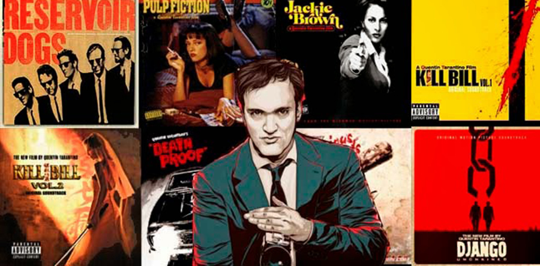

Sus inicios en el séptimo arte fueron muy tempranamente, ya que el director trabajó en su adolescencia en un videoclub, por lo cual se fue interesando cada vez más en el tema y logró ser un experto en cine. Con el pasar del tiempo, Tarantino se fue involucrando cada vez más hasta que finalmente decidió realizar su propia película, que fue Reservoir Dogs en el año 1992. La película fue presentada dicho año en el Festival de Cannes, y todos quedaron fascinados, a pesar de que la película contó con un muy bajo presupuesto.
Tarantino terminó poniendo el mundo cinematográfico a sus pies y haciendo largometrajes cuya estética ha influido no sólo en el mundo cinematográfico, sino también en la televisión y la publicidad. Son films que incluso hasta el día de hoy han logrado imponerse en el imaginario colectivo y son parte de la cultura popular contemporánea alrededor de todo el mundo. Cada vez que reaparece con un nuevo proyecto cinematográfico, el director siempre logra sorprender por su originalidad al momento de contar una historia, dotar a los personajes con características únicas, y hacer de la violencia una auténtica forma de arte, lo cual es su sello identificativo.
Las producciones Tarantinescas no buscan convencer ni educar a su público. Como el mismo autor ha confesado, su único objetivo como director es el de entretener y nada más. No se trata de un cine con carga ideológica o discursos políticos detrás, lo que se ve es lo que es. El cine de Tarantino combina excelente música, imágenes y contenido y logra así crear verdaderas obras maestras que trascienden en el tiempo. Las películas de Tarantino han sido alabadas como también duramente criticadas, pero más allá de las opiniones negativas, es evidente que son verdaderas obras maestras que lograron trascender merecidamente en el mundo del séptimo arte. Toma prestados elementos de otros films, los mezcla con referencias a la cultura popular de su tiempo, y les impone una marca propia que hace que su estilo pueda ser reconocible en cada una de sus películas. Sin dudas, Quentin Tarantino es uno de los mejores directores de cine de todos los tiempos.